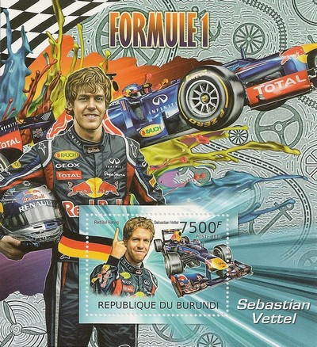
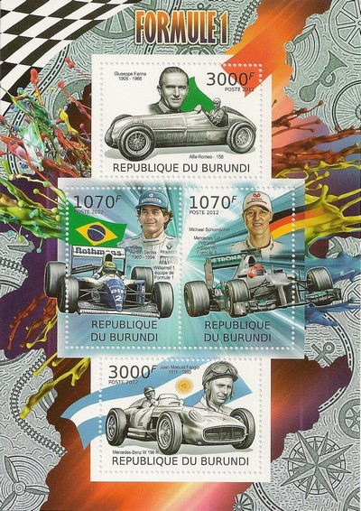
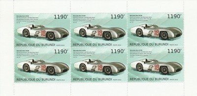
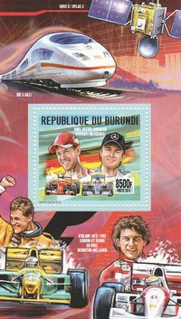
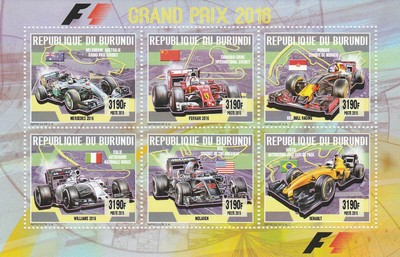

Depicted on Postage Stamps
|
 Issue date: 2012 A commemorative sheet featuring Sebastian Vettel. In his first year driving for Red Bull in 2009, Vettel finished the season as the youngest-ever World Drivers' championship runner-up. The following year he went on to become the youngest driver ever to win the World Drivers' Championship. In the same year he helped Red Bull win the team's first World Constructors' Championship. He followed up his first championship with a second in 2011, becoming the youngest double as well as youngest consecutive champion. Vettel won the 2012 F1 World Championship, becoming the youngest triple champion in the history of the sport. Vettel holds numerous other "youngest" Formula One records, among them: the youngest driver to have taken part in an official practice session of a Grand Prix, to score championship points, to lead a race, to secure pole position, and to win a race.  Issue date: 2012 A commemorative sheet featuring the following cars and drivers: - Giuseppe Farina and the Alfa Romeo 158 - Ayrton Senna and the Williams FW16 - Michael Schumacher and the Mercedes F1 W03 - Juan Manuel Fangio and the Mercedes-Benz W196  Issue date: 2012 The Mercedes-Benz W196 was produced for the 1954 and 1955 seasons. In the hands of Juan Manuel Fangio and Stirling Moss it won 9 of 12 races entered and captured the only two world (drivers) championships in which it competed. Firsts included the use of desmodromic valves and Daimler-Benz developed mechanical direct fuel injection adapted from the DB 601 high-performance V12 used on the Messerschmitt Bf 109E fighter during World War II. Two variants were produced, the aerodynamic closed-wheel aluminium "Type Monza" streamliner was used only at Monza (where it picked up its nickname) and Silverstone, but was found to be really only suited to high-speed tracks made up of straights and slow corners. It was defeated at Silverstone (a high-speed corner dominated circuit), so the open wheel version was introduced for the German Grand Prix. At the end of the 1955 season Mercedes withdrew from motorsport.  Issue date: 20th May 2016 A mini sheet of one value featuring various F1 drivers: - Sebastian Vettel - Nico Rosberg - Michael Schumacher - Ayrton Senna  Issue date: 20th May 2016 A mini sheet of values featuring the following F1 cars: - Mercedes F1 W07 Hybrid - Ferrari SF16-H - Red Bull RB12 - Williams FW38 - McLaren MP4/31 - Renault R.S.16 |